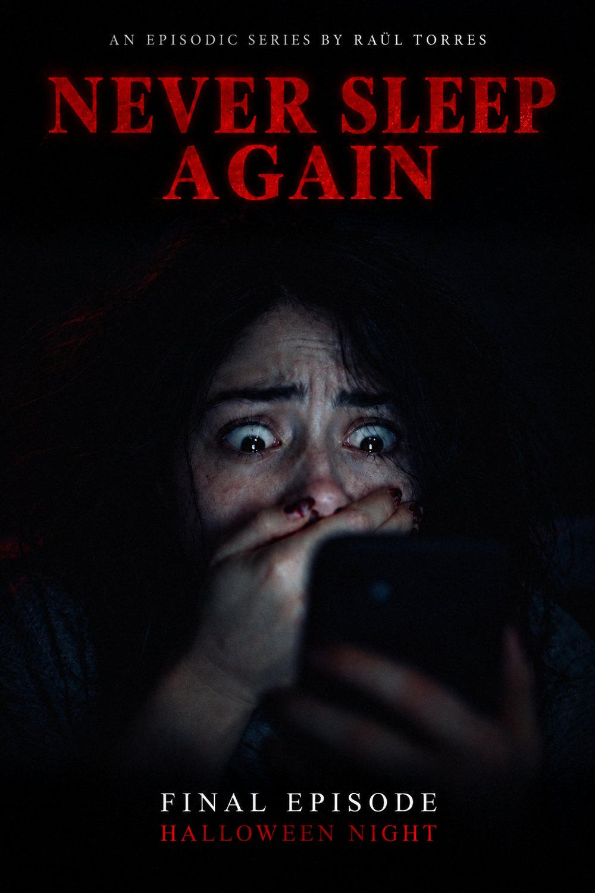
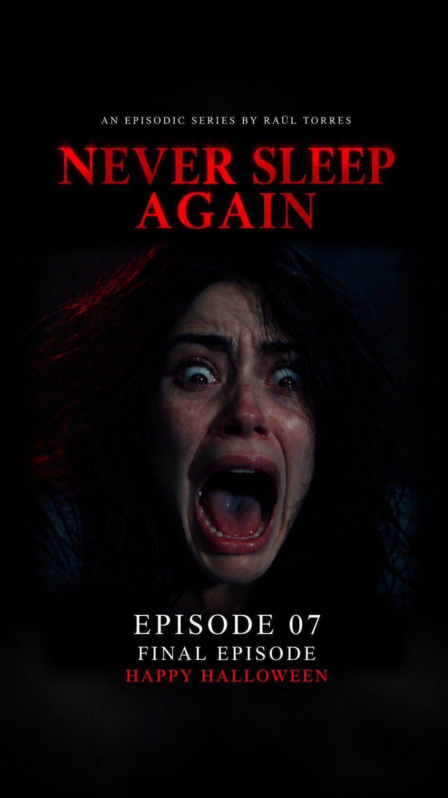
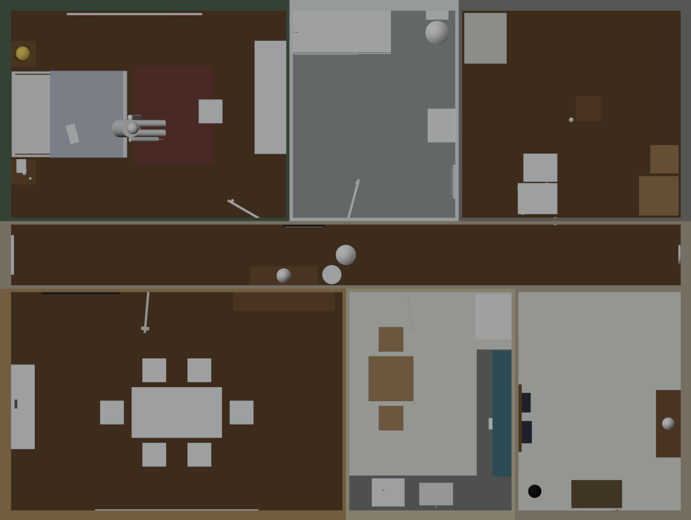
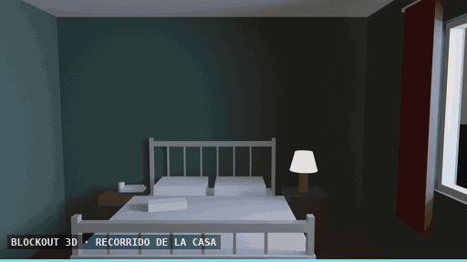
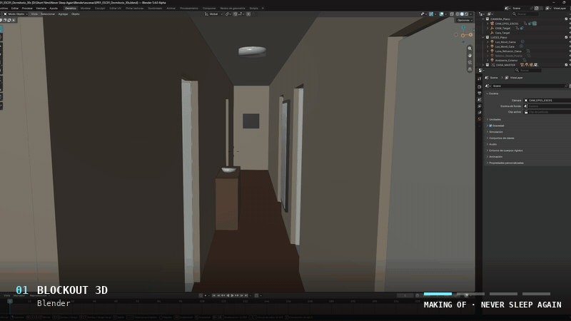

● REC0:42
01
Una chica duerme. Alguien recorre su casa con el móvil en la mano y lo graba todo. Ella no se entera hasta que ve los vídeos. A girl sleeps. Someone walks through her house with a phone in hand, recording everything. She finds out only when she watches the videos.

Una serie de siete episodios, seis de unos 30 segundos y un final de 2:08 que llega la noche de Halloween. A seven-episode series: six episodes of roughly 30 seconds and a 2:08 finale on Halloween night.

En la noche de Halloween descubriremos por fin la verdad. El gran final. ¡No te lo pierdas! On Halloween night, we finally discover the truth. The grand finale. Don’t miss it!
La serie está hecha con inteligencia artificial y con 3D, bajo una dirección humana que decide cada plano. Esto es lo que hay detrás. The series is made with artificial intelligence and 3D, under human direction that decides every shot. This is what sits behind it.
La casa está recreada entera en 3D. Cada plano nace de una cámara colocada dentro de ese espacio, así la casa es siempre la misma. The whole house is rebuilt in 3D. Every shot starts from a camera placed inside that space, so the house is always the same house.
Genera los vídeos a partir de las referencias de cada escena. Aquí se le da vida a la luz, a los movimientos de cámara y al pulso del móvil. Generates the videos from each scene's references. This is where the light, the camera moves and the shake of the phone come to life.
Une los planos y construye la noche: etalonaje oscuro, negros potenciados y un acabado frío y sucio de grabación nocturna. Joins the shots and builds the night: a dark grade, deep crushed blacks and the cold, grainy look of a nighttime recording.
Conectado a Blender y a Dreamina, ayuda a preparar las referencias y a escribir las instrucciones de cada plano. Connected to Blender and Dreamina, it helps prepare the references and write the instructions for each shot.
Señal recuperada. Play.Signal found. Play.
Cómo se hizo: la casa en 3D, el trabajo de color y el paso de la referencia al plano y las capas de móvil. Tres cintas, ya disponibles. How it was made: the 3D house, the color work and the step from reference to shot and the phone layers. Three tapes, now available.
Antes de que existiera un solo plano, existía una casa. Cada estancia de la serie se construyó en Blender con volúmenes simples y colores planos, sin texturas: un dormitorio, un baño, una habitación vacía, un pasillo, un salón-comedor, una cocina y una entrada, amuebladas hasta las sillas de la mesa y el cuenco de la consola del pasillo. Before there was a single shot, there was a house. Every room of the series was built in Blender with simple volumes and flat colors, no textures: a bedroom, a bathroom, an empty room, a hallway, a living-dining room, a kitchen and an entrance, furnished down to the chairs around the table and the bowl on the hallway console.
Por eso la casa nunca cambia. Cada episodio parte de una cámara colocada dentro de este mismo espacio, así que el pasillo de un capítulo es el mismo pasillo del siguiente. That is why the house never changes. Every episode starts from a camera placed inside this same space, so the hallway in one episode is the same hallway in the next.


Hasta la luz se coloca aquí: el azul frío de la calle en las ventanas, las rayas de la farola entre las persianas, el brillo de un móvil. Son solo lámparas en Blender, pero les dicen a todos los pasos siguientes de dónde viene la noche. Even the light is placed here: the cold blue of the street at the windows, streetlamp stripes through the blinds, the glow of a phone. They are only lamps in Blender, but they tell every later step where the night comes from.
El blockout no es el aspecto final, y el vídeo generado tampoco. La noche se construye al final, en DaVinci Resolve Studio. Este barrido recorre las cuatro fases de un mismo plano: la vista de Blender, el render de referencia, la generación con Seedance 2.5 y el resultado etalonado. En el último fotograma casi todo se ha ido a negro. Solo sobreviven la luz del techo, los marcos de las puertas y la ventana cálida. The blockout is not the final look, and neither is the generated video. The night is built last, in DaVinci Resolve Studio. This sweep goes through the four stages of a single shot: the Blender view, the reference render, the Seedance 2.5 generation and the graded result. In the final frame almost everything has gone to black. Only the ceiling light, the door frames and the warm window survive.

El aspecto que buscábamos: negros profundos y aplastados, paredes de un verde azulado frío, luz cálida solo donde hay una fuente real —la ventana, los reflejos del suelo— y el acabado blando y granulado de una grabación de móvil por la noche. The look we were after: deep crushed blacks, cold blue-green walls, warm light only where there is a real source — the window, the reflections on the floor — and the soft, grainy finish of a phone recording at night.
Todos los planos de la serie siguen el mismo camino corto, de una cámara en Blender a un clip en la línea de tiempo. Every shot of the series follows the same short path, from a camera in Blender to a clip on the timeline.
Cada episodio quiere parecer lo que es dentro de la historia: una grabación hecha con un móvil. Esa sensación no sale de la imagen generada. Se construye encima, con Fusion, la página de composición que viene dentro de DaVinci Resolve Studio. Every episode wants to look like what it is inside the story: a recording made on a phone. That feeling does not come from the generated image. It is built on top, in Fusion, the compositing page inside DaVinci Resolve Studio.
Como cada capa es un elemento independiente, se puede ajustar cualquier detalle del móvil sin volver a generar el plano. Because every layer is an independent element, any detail of the phone can be adjusted without generating the shot again.
Nota de direcciónDirector’s note Esta serie se ha inspirado en el cine de terror de los 90, en películas como Pesadilla en Elm Street y Scream, del gran Wes Craven. Este es mi homenaje. This series was inspired by 90s horror cinema, by films like A Nightmare on Elm Street and Scream, by the great Wes Craven. This is my homage.